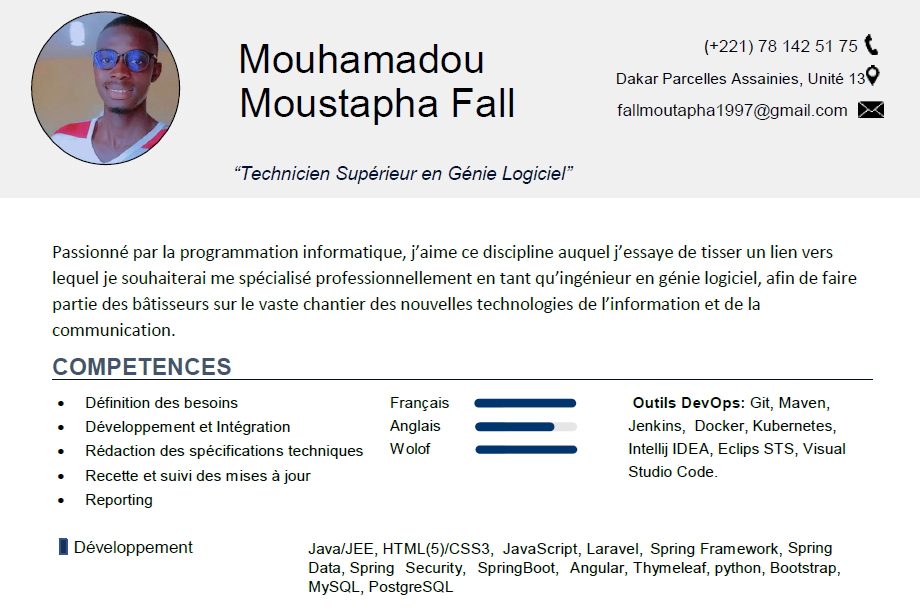

MOUHAMADOU MOUSTAPHA FALL
FullStack Developer | Co-fonder at Iconedev |
Passionné par la programmation informatique, j’aime ce discipline auquel j’essaye de tisser un lien vers lequel je
souhaiterai me spécialisé professionnellement en tant qu’ingénieur en génie logiciel, afin de faire partie des bâtisseurs sur
le vaste chantier des nouvelles technologies de l'information et de la communication.
EXPERIENCES
Déscription poste:
- Analyse des besoins en system d'information des clients et les traduire en projets
- Assurer l'assistance,le conseil et le support auprés des clients
- Participer aux decisions concernant les choix de matériels et de logiciels
Projet realisé:
Creation d'une de gestion de stock SpringBoot/Thymeleaf/JQuery.
- Analyse des besoins et la fonctionalité de différente solution possible
- Conception de modelisation
- Tests de monteé en charge et fonctionel
- Développement et déploiement
Creation d'une application desktop permettant une meilleure gestion des étudiants de NIIT university à partir de Script linux.
- Analyse des besoins et la fonctionalité de différente solution possible
- Conception de modélisation
- Développement et déploiement
Création d'une application web permettant la vente aux enchéres allant d'outils informatiques et d'automobiles à partir de Script JEE (Servlet/Jsp).
- Analyse des besoins et la fonctionalité de différente solution possible
- Conception de modelisation
- Test pilote et fonctionnelle
- Test monter charge
- Developpement et deploiement
Creation d'une bibliotheque en ligne a partir de script JEE/EJB.
- Analyse des besoins et la fonctionalité de différente solution possible
- Conception de modelisation
- Test pilote et fonctionnelle
- Test de monteé en charge
- Développement et déploiement
Télécherger mon CV en pdf:
